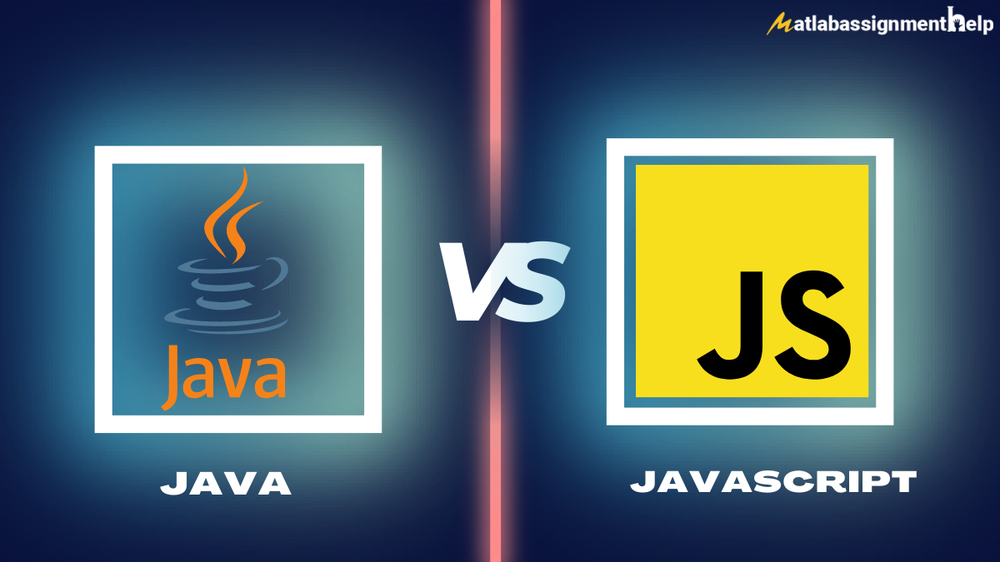

Introduction
Java and JavaScript (JS) are both popular programming languages with distinct characteristics and purposes. Java is a general-purpose language known for its reliability, security, and platform independence. It is widely used for enterprise-level applications, server-side development, and Android app development. Java emphasizes strong typing, static typing, and strict syntax. It is compiled into bytecode and executed by the Java Virtual Machine (JVM). With its robust ecosystem and extensive libraries, Java offers a wide range of functionalities for various application domains.
On the other hand, JavaScript is primarily used for web development and runs within web browsers. It enables client-side scripting and is commonly used to create interactive web interfaces and build web applications. JavaScript supports event-driven, functional, and object-oriented programming paradigms. It is dynamically typed, allowing for more flexibility as variable types can change during runtime. JavaScript's interpreted nature allows code to be executed directly by the browser's JavaScript engine, making it well-suited for dynamic web content and enhancing user interactivity.
In summary, while Java and JavaScript share similar names, they serve different purposes and operate in different environments. Java is known for its reliability and versatility across various application domains, while JavaScript is focused on web development and enhancing user experiences on the client-side. Understanding their differences and strengths can help developers choose the appropriate language for their specific programming needs.
// Print "Hello, World!" console.log("Hello, World!");

Knowledge
JavaScript (JS) is a versatile programming language commonly used for web development. Before diving into JS, it's helpful to have a good understanding of fundamental programming concepts. Familiarity with variables, data types, conditionals, loops, functions, and basic algorithms will provide a solid foundation. Additionally, having a grasp of HTML and CSS, which are used for structuring and styling web pages, will complement your JS learning. As you progress, understanding concepts like DOM manipulation, event handling, and asynchronous programming will be essential in building interactive web applications. JavaScript is known for its flexibility and wide range of applications, making it a valuable skill for front-end and full-stack web development.

Java, on the other hand, is a widely-used general-purpose programming language that focuses on stability, performance, and scalability. To start learning Java, having a strong grasp of basic programming concepts is crucial. Understanding variables, data types, control structures, functions, and algorithms is essential. Moreover, Java is an object-oriented programming (OOP) language, so it's important to learn OOP principles such as classes, objects, inheritance, polymorphism, and encapsulation. Java is widely used for building enterprise-level applications, Android mobile apps, and server-side development. It's worth noting that Java has a stricter syntax and requires a more formal approach compared to JavaScript, but the knowledge and skills gained from learning Java can be applied to other languages in the Java ecosystem.
JS and Java
This section covers JavaScript (JS) and Java programming languages.
Learn about the similarities and differences between JS and Java.
Explore their features, syntax, and common use cases.
Understand the role of JS in web development.
// JavaScript Hello World console.log("Hello, World!");
Discover the versatility of Java for various applications.
Get familiar with the ecosystem and tools of both languages.
Variables
In this section, you'll learn about variables in programming.
// Declare and initialize a variable let count = 0; // Increment
the variable count++; // Print the variable value
console.log(count);
Understand the concept of variables and their purpose.
Learn how to declare and initialize variables in JS and Java.
Explore different data types and their usage.
- Boolean. true and false
- null. A special keyword denoting a null value. Because JavaScript is case-sensitive, null is not the same as Null, NULL, or any other variant.
- undefined. A top-level property whose value is undefined.
- Number. 42 or 3.14159.
- String. "Howdy"
- Symbol (new in ECMAScript 2015). A data type whose instances are unique and immutable.
Hello World
This section teaches you how to write a "Hello, World!" program.
Learn the basic structure of a program in JS and Java.
// Java Hello World public class HelloWorld { public static void
main(String[] args) { System.out.println("Hello, World!"); } }
Understand how to output text to the console or display it on the screen.
Write your first program to display the famous greeting.
Explore variations of the "Hello, World!" program.
Learn how to run your program and see the output.